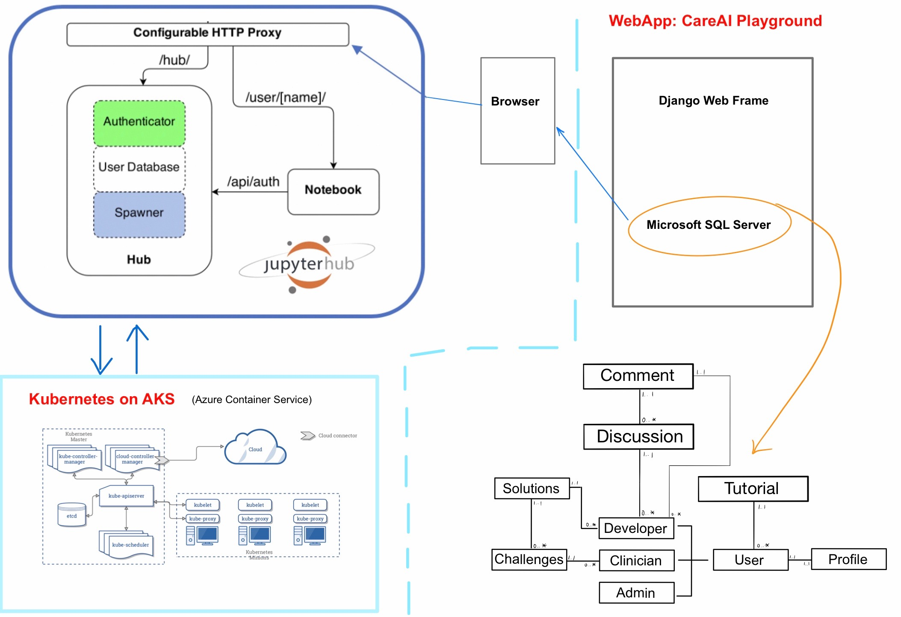

Prototype
System Architecture Diagram

Description of Each Component:
- WebApp: NHS PlayGround
The NHS PlayGround application is developed mainly with Django web framework. Regarding front-end, we implement html templates rendered in Django. As for the database, the Django SQLite is used to store the information of different types of users, the challenges provided by clinicians and the solutions uploaded by AI developers. Additionally, Django REST framework is used to develop the JupyterHub REST API.
- JupyterHub
JupyterHub is a multi-user server that manages and proxies multiple instances of the single-user Jupyter notebook server.
Three subsystems make up JupyterHub:
- a multi-user Hub (tornado process)
- a configurable http proxy (node-http-proxy)
- multiple single-user Jupyter notebook servers (Python/IPython/tornado)
- Kubernetes on AKS
Azure Kubernetes Service (AKS) which is a managed container orchestration service based on the open source Kubernetes system. Kubernetes is the best choice to set up our own JupyterHub on a cloud and leverage the clouds scalable nature to support large groups of users. Based on Kubernetes, resources on the cloud can be managed.
ER Diagram to Database Design

Implementation of Main Finished Functionalities
Setting up of authentication system (i.e. different user types, user registration and logging in)
We used the Django admin framework to implement this feature which acts as a layer of security as only people with account can access site and thus data.
Upload/download of CSV files (results and dataset)
This function is achieved with Django built-in form submission support. Different form types can be used to submit a varied type of data, in our case enctype="multipart/form-data" is used for file submission.
Deployment on Azure and provision of cloud computing services
To deploy the JupyterHub on Azure, we chosed the Azure Kubernetes Service(AKS) which can provide a fully managed Kubernetes container orchestration service. Firstly, we prepared our Azure shell environment using the Azure interactive shell. Then, we activated the subscription to manage spending and created a resource group. Azure uses the concept of resource groups to group related resources together. We also created the resource group in a given data center location (UK-South) for GDPR. After that, we created computational resources within this resource group and created an fully functionsl AKS cluster to deploy the JupyterHub.
Setting up and integration of JupyterHub to the site to provide onsite coding environment
Before setting up the JupyterHub, we set up Helm which is the package manager for Kubernetes. Then, we wrote some YAML configuration files. Followed by these, we made Helm aware of the JupyterHub Helm chart repository and installed the JupyterHub chart from it.
To use JupyterHub, we entered the external IP for the proxy-public service in to a browser. JupyterHub then can run with a default authenticator. Authentication of access to our JupyterHub was written in the configuration